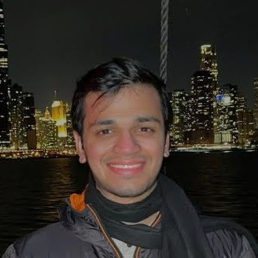
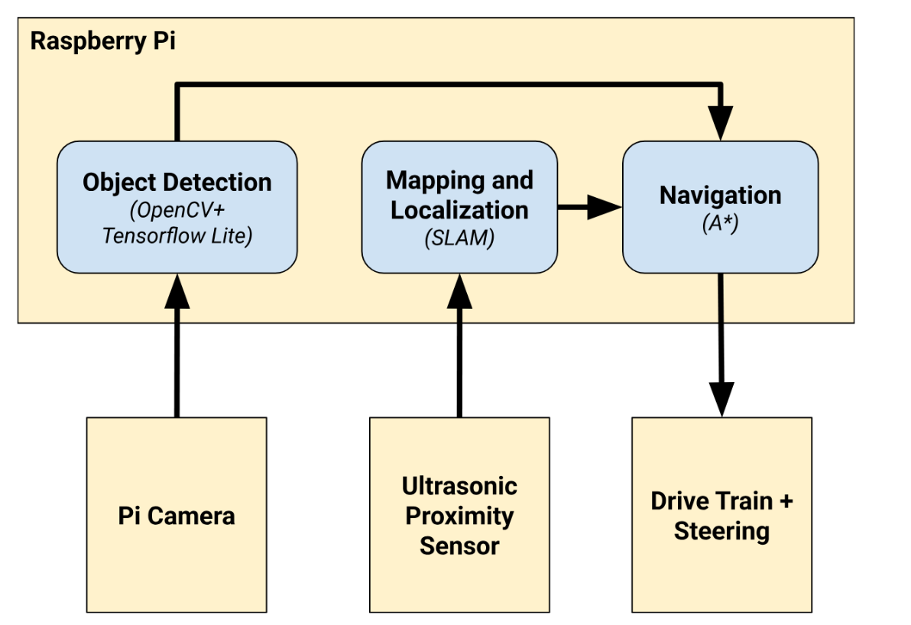
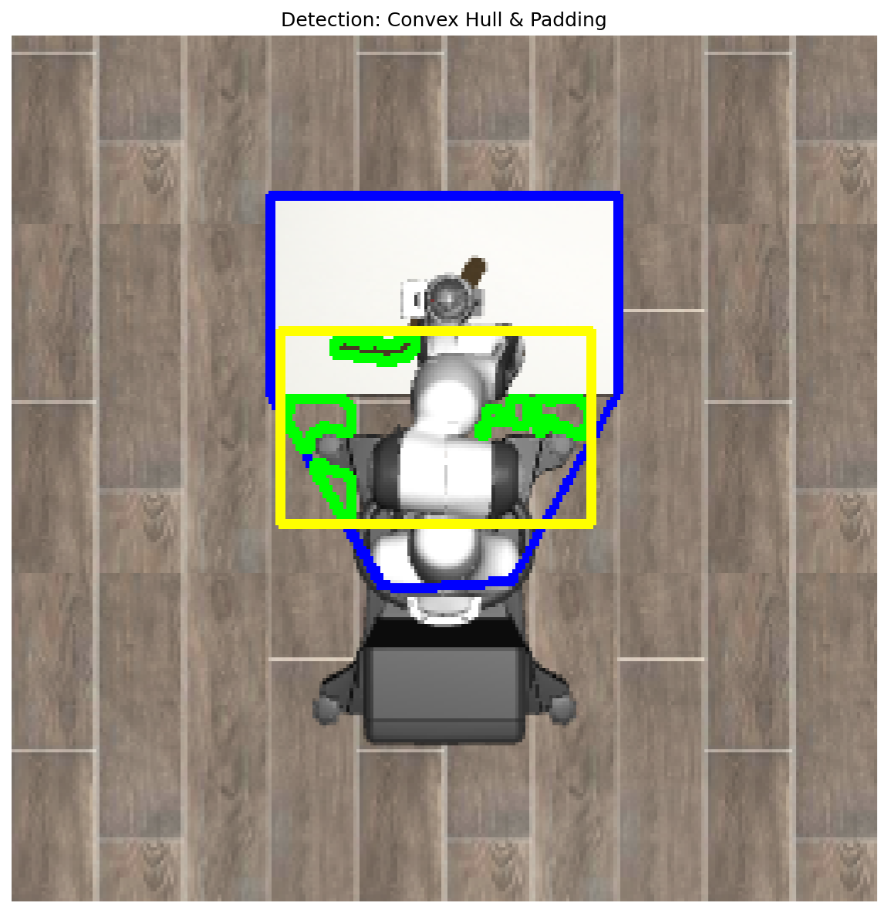
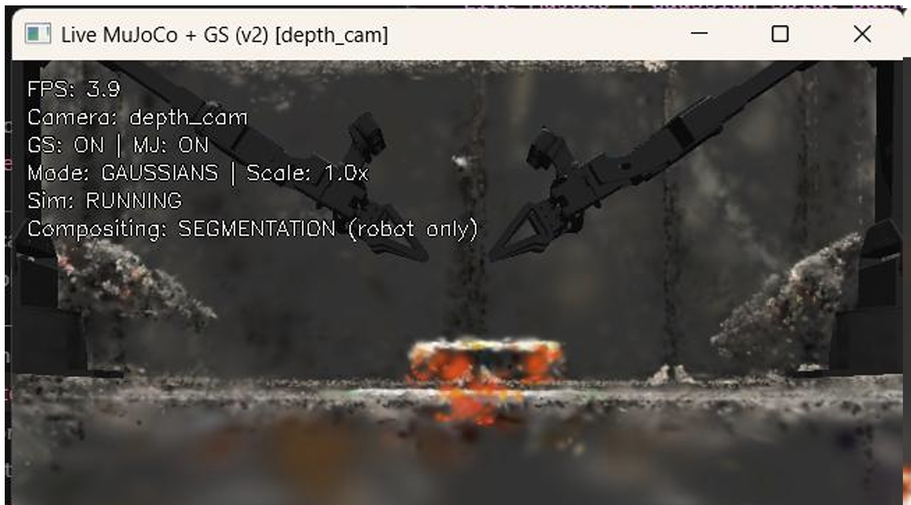
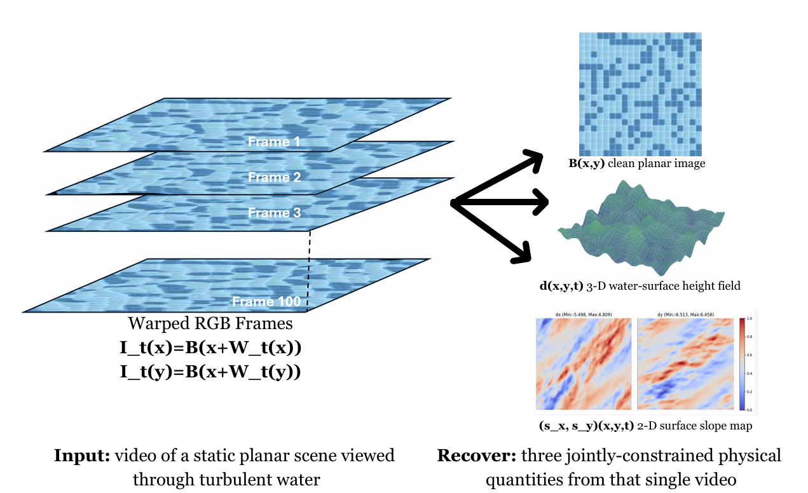
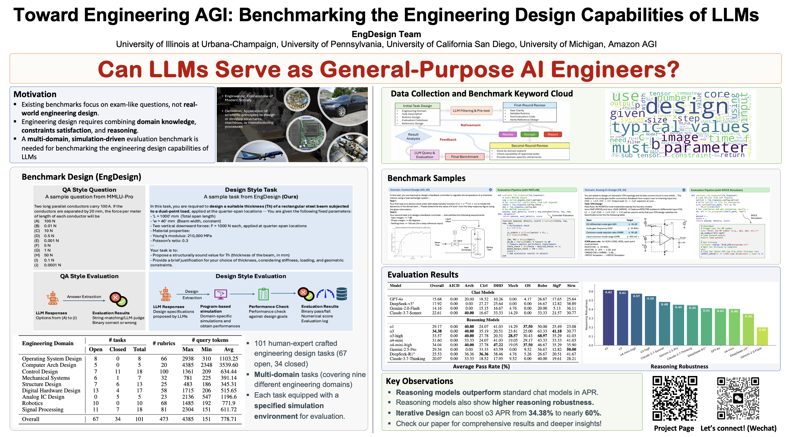
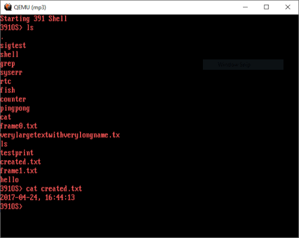
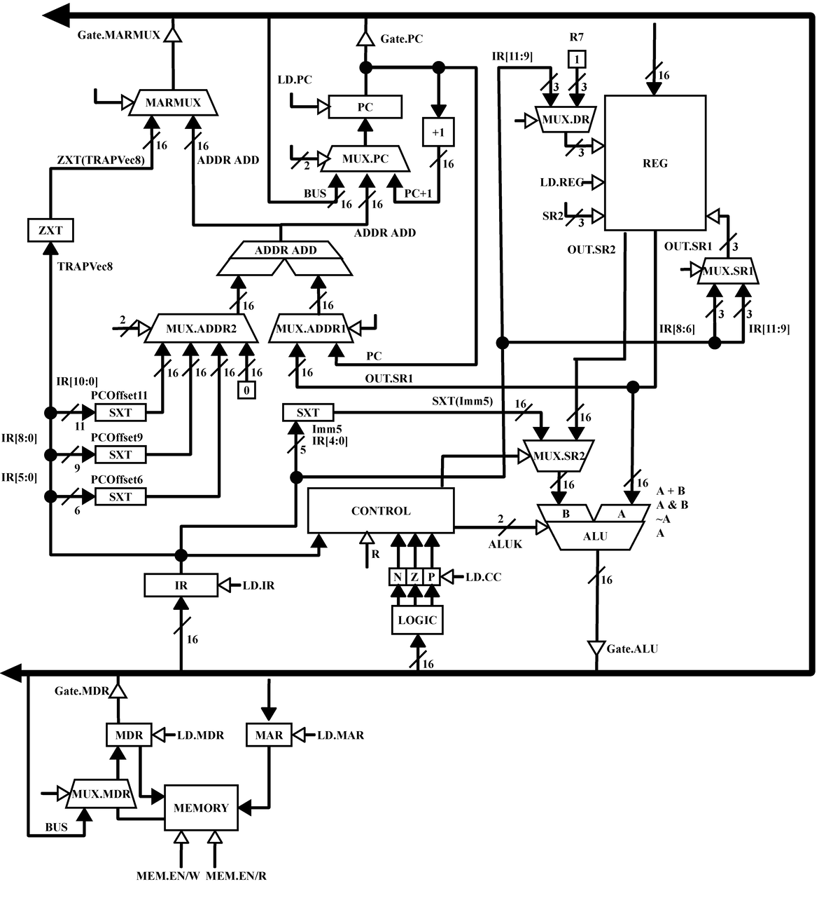
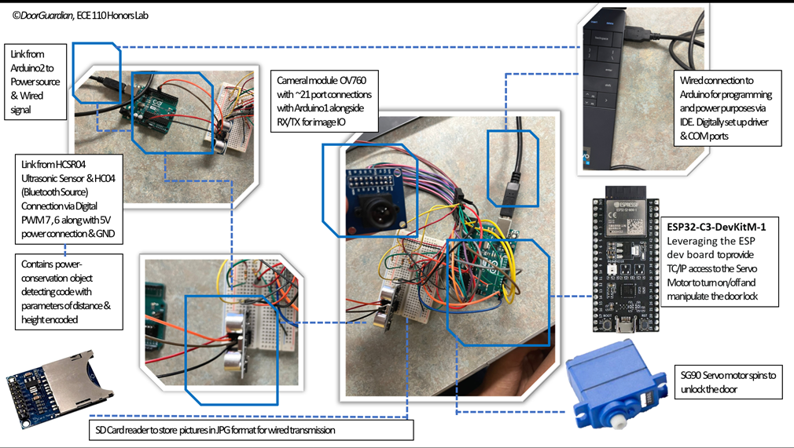

Robotics Institute · Carnegie Mellon University
I am a graduate student at the Robotics Institute in Carnegie Mellon University's School of Computer Science, where I work with Prof. Nancy Pollard. Previously, I conducted vision research at the National Center for Supercomputing Applications with Prof. Narendra Ahuja. I've also worked on world models and humanoid control in industry and published at NeurIPS 2025. My interests span robot learning (world models, imitation learning, teleoperation), computer vision (3D reconstruction, physics-informed restoration, NeRFs), and AI systems (LLM agents, SLAM, CUDA optimization).

Built an end-to-end autonomy stack on an embedded vehicle, closing the loop from local sensing and online map construction through goal-directed planning, visual recognition, and motor control while exposing live vehicle telemetry over wireless links.

Built complementary geometric, learned, and hybrid manipulation systems in robosuite: an RGB-D cube-stacking pipeline, state-based and ResNet18 imitation policies, and a Simplex wiping controller combining reactive perception with behavioral-cloning fallback.

Contributors: Nippun Sabharwal, Shivansh Patel
The visual sim-to-real gap is the biggest bottleneck in scaling robot learning: policies trained on flat-shaded MuJoCo scenes fail against real-world lighting and textures. This project fuses a photorealistic 3D Gaussian Splat of a real lab with MuJoCo physics so robot policies train in an environment that looks real and behaves real, tackling the same visual grounding problem that labs like Physical Intelligence, Google DeepMind, and Toyota Research Institute are racing to solve.
At NCSA and CSL, developed Wave2Plane as part of a broader investigation into physics-informed recovery of scenes degraded by refractive turbulence. The framework combines simulator-grounded supervision, spatiotemporal geometry estimation, and multi-frame optimization to reconstruct planar underwater scenes without paired real-world ground truth.

Contributors: Nippun Sabharwal, Shreyanka Sinha
Engineered an intuitive VR teleoperation system that enables precise, real-time remote robot control by translating head movements into robot actions and providing immersive 3D visual feedback for enhanced depth perception.
STL credit: OpenTeleVision
Implemented 2D convolution from scratch in CUDA, progressing from direct convolution to a shared-memory implicit-GEMM kernel and shape-aware dispatch. Built a scalar CPU oracle and regression suite for arbitrary strides and non-aligned tensor shapes, achieving errors below 1.4 × 10−6 and up to 361 GFLOP/s on an RTX 3050.

Research with Prof. Bin Hu · NeurIPS 2025
Co-developed EngDesign, a multi-domain benchmark for evaluating whether frontier LLMs can produce executable engineering designs rather than answer static technical questions. Contributed the digital-hardware evaluation pipeline, using simulation and testbench feedback to measure functional correctness and support iterative design refinement.

Developed a full UNIX-style operating system kernel and robust journaling filesystem from scratch for the RISC-V architecture.

Designed and implemented a 16-bit CPU based on a reduced instruction set, x86-inspired ISA in SystemVerilog, end-to-end from ISA specification through FPGA verification.
cpu_to_io bridge interfacing with on-board switches and hex displays.
Contributors: Nippun Sabharwal, Vayun Gupta, Siddarth Natarajan
Developed an autonomous security system to modernize access control, replacing traditional key/card-based systems with sensor-triggered visual verification and remote actuation.
My first project! Built and scaled a Harry Potter fan community to 12,500+ registered users and 4,000+ social media followers. Led and coordinated a team of 30 volunteers to develop quizzes, discussion forums, and engaging content, fostering a highly active online platform.
Built scalable evaluation infrastructure for long-duration camera/ADAS and vehicle-hardware validation, transforming multi-signal telemetry into reproducible validation campaigns, automated robustness verdicts, and actionable failure diagnoses.